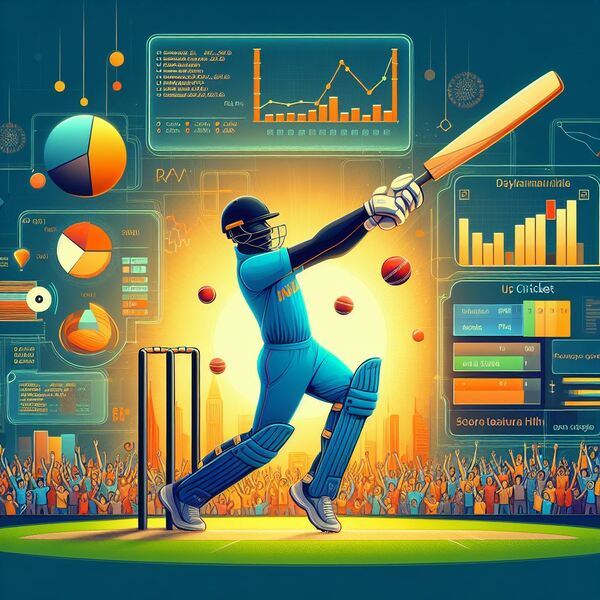

01
Computer vision · accessibility
Real-time Hand Gesture Recognition
Python · OpenCV · MediaPipeA trained gesture-recognition system with a live interface for human-computer interaction and accessibility applications.
Philadelphia · building worldwide
Technologist, data builder, and prompt engineer exploring the useful edge of AI, analytics, automation, and product engineering.
Not just skills. Solutions.
I work across software, data science, machine learning, and intelligent automation—turning ambiguous problems into systems people can actually use. My approach blends rapid learning, clear communication, and a bias toward shipping.
From predictive health tools and analytics pipelines to computer vision and decentralized platforms, each build is a new way to make complexity useful.
Selected work across intelligent products, data, and dependable software.
Computer vision · accessibility
Conversational AI
Social intelligence
Trusted infrastructure
Adaptive intelligence
Decentralized systems
Security intelligence
Creative computing

Sports analytics
Market intelligence
Predictive health
Computer vision
Every public, original repository—linked directly to its source. Live deployments are marked where available.
Investor-relations intelligence with meeting extraction, CRM autopilot, RAG, relationship graphs, and AI cost governance.
Knowledge retrieval with embeddings, vector search, grounded citations, and evaluation.
Browser-based CSV validation, KPI calculation, data-quality checks, and business-ready exports.
An adaptive-learning product exploring personalized paths, feedback, and intelligent education workflows.
Exploratory and predictive analysis of SpaceX launch data in a Jupyter workflow.
A notebook-based capstone bringing data collection, analysis, visualization, and modeling together.
Historical stock and company-revenue analysis with a dashboard-driven reporting workflow.
A practical notebook cataloging tools, languages, libraries, and core data-science workflows.
Graduate data-science project work, experiments, and analysis artifacts.
Applied data-analysis coursework developed as a complete final project.
Python-based information systems coursework and practical implementations.
A custom interactive invitation experience built for the web.
The previous portfolio preserved as a reference point in the evolution of this site.
The public repository powering the GitHub profile and personal developer presence.
The motion-led portfolio you are exploring now—fully open on GitHub.
Mumbai, Maharashtra · Technology and intelligent systems
College of Computing & Informatics · Philadelphia
Computer Science Engineering · Data Science
ICSE · followed by Telangana State Intermediate at Sri Chaitanya Junior College
Coordinator at Swecha Telangana since 2020—organizing technical and educational events, a WordPress workshop, and a summer internship program.
Led CMRIT’s Technical Club, modernizing infrastructure and promoting open-source software.
The next system starts here